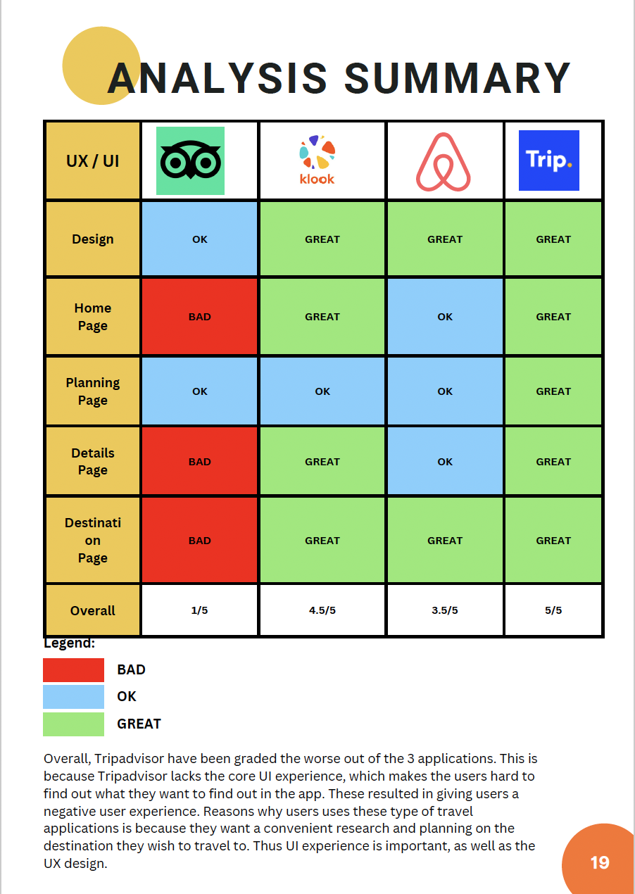

Research
After I had planned out on what I want to do for my app, I first created a proposal and put down all my research and information down inside the proposal
before working on my prototypes. I also wrote down a brief description of what I plan to do for the advanced TripAdvisor app.
I first researched about the current TripAdvisor information and the travel industry after the COVID-19 period. How has COVID-19 impacted the travel economy
and affected travelling.
Then I researched and compared TripAdvisor's mobile application with its potential competitors and see which app is better and why it is better where users
chose other apps instead of TripAdvisor.
